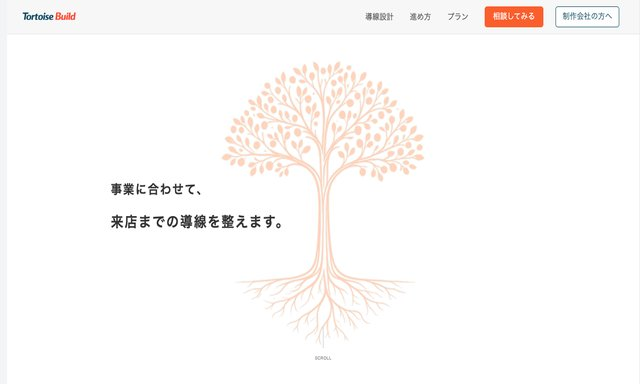
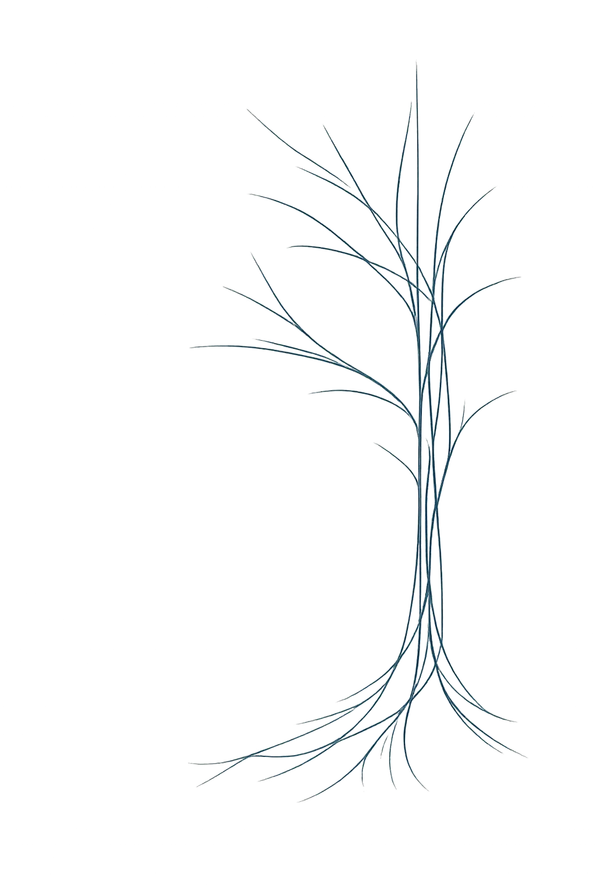
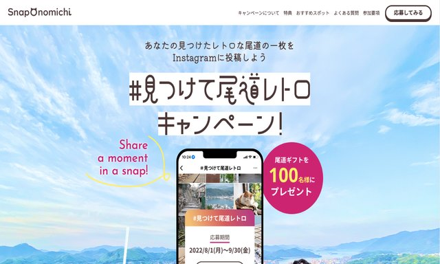
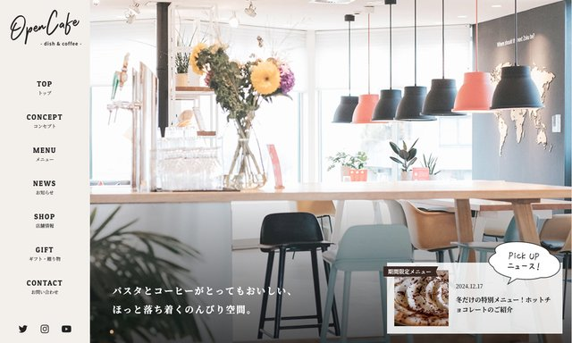

Tortoise Build ポートフォリオ
構成設計・実装を行った、自身のポートフォリオサイトです。
詳細を見る
制作の土台を整えながら、丁寧に支えます。
認識のずれを防ぐために、背景や目的を確認したうえで着手します。
見た目だけでなく、情報の流れや使いやすさを意識して形にします。
公開して終わりではなく、その後の運用も見据えて整えることを大切にしています。
主な使用技術
デザインデータをもとにした実装から、更新や調整を含む対応まで行っています。
これまでに制作・実装してきたサイトを掲載しています。
詳細ページから、構成や実装内容も確認いただけます。

構成設計・実装を行った、自身のポートフォリオサイトです。
詳細を見る
模写や課題制作を通して、再現力や実装力を積み上げています。
詳細を見る
WordPressでの実装・調整対応を含む制作経験を掲載しています。
詳細を見る一部のデモ環境は、ID / パスワードともに「demo」でご確認いただけます。